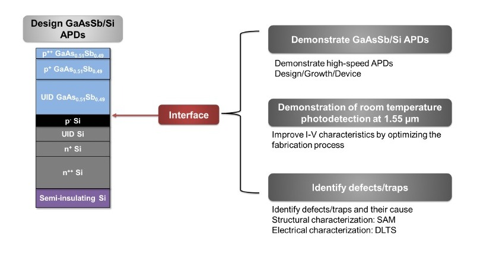

01 / DEVICE DESIGN / JUL 2024 – AUG 2026
Engineering the GaAsSb/Si avalanche photodiode.
Connecting III–V absorption with a silicon device platform for 1.55 µm detection.
The challenge
An integrated detector needs control over electric-field distribution, carrier transport, and the heterojunction—not just a compatible absorber.
My contribution
Optimized SACM structures with TCAD by tuning the absorber, charge, and multiplication layers. Investigated GaAsSb/Si band alignment with XPS and correlated interface conditions with IV/CV behavior.
Outcome & learning
Identified a conduction-band offset below 0.1 eV and used interface analysis to inform device design and interpretation of electrical behavior.
Silvaco TCAD · XPS · IV/CV · interface engineering
Related interface paper ↗